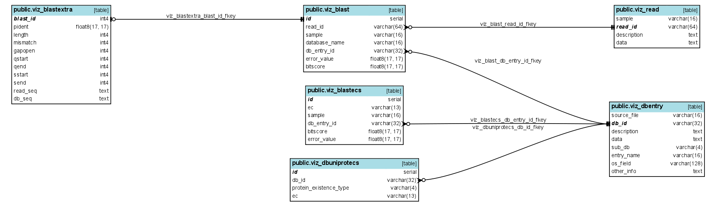
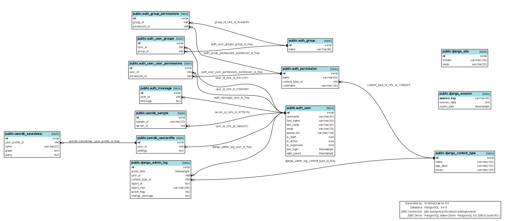

Database Structure
Database is split into two parts, with viz tables containing the actual graph data and other tables containing other data, mostly related to django user authentication, administration and user-specific information.
Viz
Database diagram, Viz-tables
- viz_reads contains the sample data, one read per row.
- viz_dbentry contains data from outside databases to which sample data is compared
- viz_blast contains the blast data, essentially connections between read and dbentry data along with information about it
- viz_blastextra contains additional information for blast data
- viz_blastecs and viz_uniprotecs contain enzyme-related data
Django
Database diagram, other tables
- userdb_savedview contains graphs views saved by user
- userdb_userprofile contains user specific settings for visualization
- userdb_sample is for limiting the samples (and related blast entries) that certain user can view
For more information about other tables, see https://docs.djangoproject.com/en/1.3/